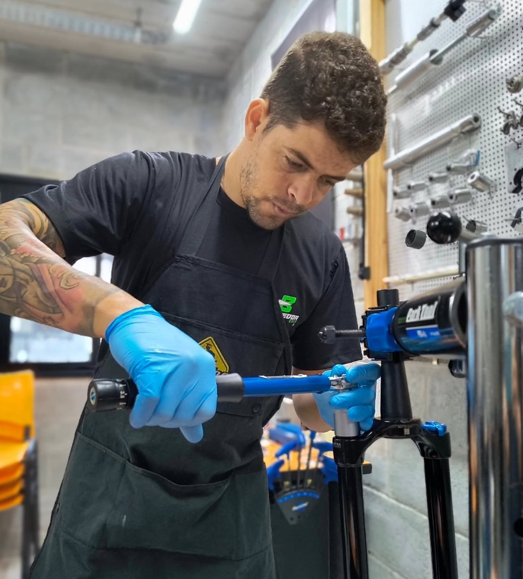

Revisão completa documentada com fotos e vídeos enviados no seu WhatsApp. Você acompanha tudo, do diagnóstico à entrega. Transparência total, mão de obra certificada.

Você entrega a bike e recebe de volta sem saber o que foi trocado, ajustado ou se algo ficou pela metade.
Prazos que nunca chegam e fim de semana perdido sem poder pedalar com os amigos.
Suspensão FOX, RockShox ou Brain exigem conhecimento específico — e nem toda oficina tem.
Você acompanha o antes, durante e depois pelo WhatsApp. Surgiu algo novo? Você aprova antes.
Rafael Batedor é certificado para serviços nas principais suspensões do mercado: FOX, RockShox, Manitou, SR Suntour e Lefty Ocho, além de shocks traseiros FOX e RockShox. Sua bike em mãos especialistas.
Busco e devolvo sua bike no endereço combinado. Você não perde tempo nem o seu pedal de fim de semana.
Serviços especializados que a Batedor Bikes executa com registro em foto e vídeo.
Fale comigo no WhatsApp e escolha o melhor dia e horário.
Traga até a oficina ou busco no seu endereço. Consulte valores e disponibilidade.
Faço a revisão completa com fotos e vídeos enviados a você em tempo real.
Devolvo no seu endereço ou você retira na oficina, pronta pra pedalar.
"Recebi vídeo de cada etapa. Minha FOX 36 ficou nova de novo e a suspensão respondendo perfeita nas trilhas. Nunca mais largo bike em outro lugar."
"Buscaram em casa na sexta e devolveram no sábado de manhã pronta pro pedal. Transparência total, vi tudo pelo Whats. Top demais."
"Sou competidor e confio cegamente. Sabe mexer em Brain de verdade, coisa rara. Revisão impecável e ainda parcelei em 12x."
Todo serviço acompanha registro em foto e vídeo. Se algo do que foi revisado apresentar problema, você volta e a gente resolve — sem custo de mão de obra. Sua confiança vale mais que qualquer venda.
Garanta seu horário agora. Revisão documentada, leva e traz e pagamento em até 12x. Fale comigo no WhatsApp.